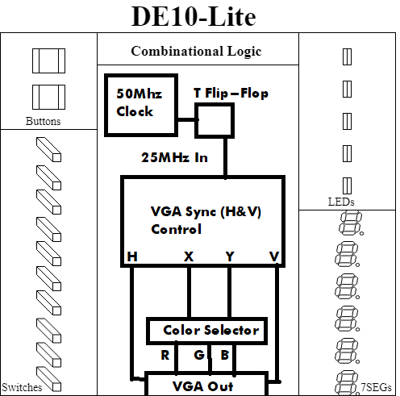
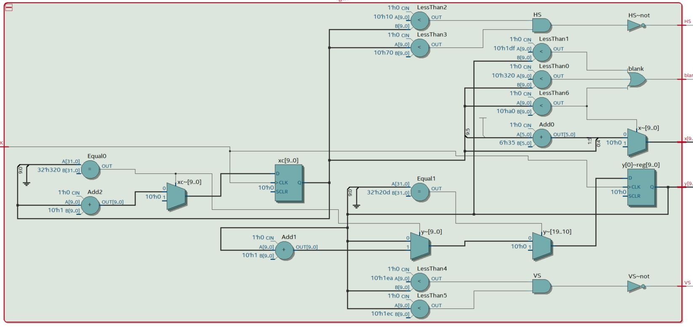
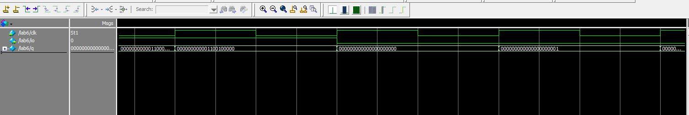
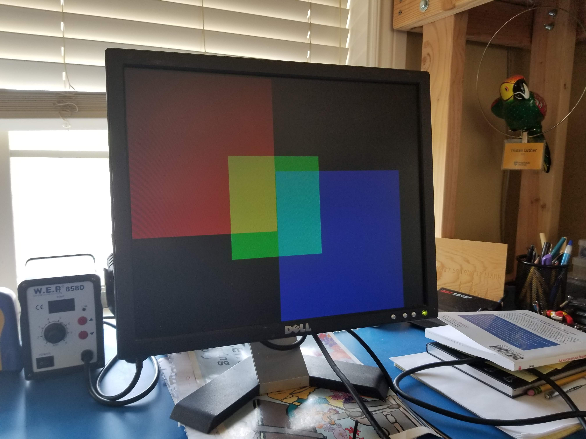
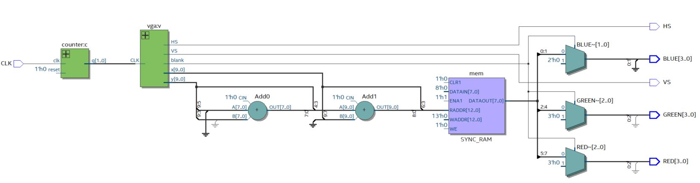
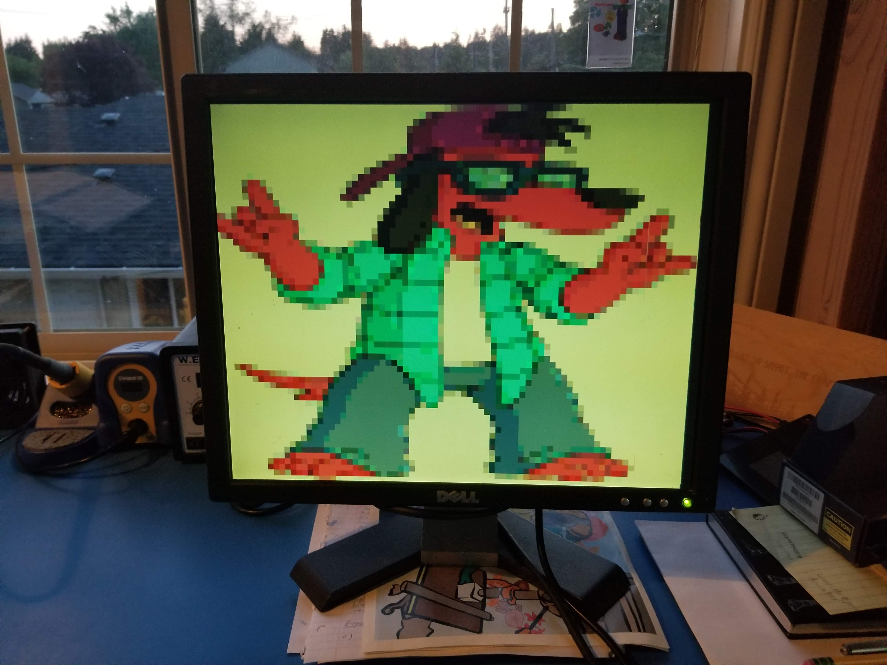

The purpose of this project was to introduce setting up a driver for a VGA output in 640 x 480 resolution and to help further my knowledge of SystemVerilog. The hardware used in this project revolved around the Terasic DE-10 MAX FPGA (https://www.terasic.com.tw/cgi-bin/page/archive.pl?Language=English&No=1021). When the SystemVerilog was synthesized a tested through ModelSim 10.5b the proper outputs were confirmed and the SystemVerilog was synthesized onto the DE-10. The DE-10s built-in VGA output was used to send the correct signals to a VGA display driven monitor. The timing for the refresh rate of the display was set using the on-board 50MHz clock. The clock signal was slowed down to 25MHz to get the correct resolution, as recommended by the FPGA datasheet (Found here: https://www.intel.com/content/dam/altera-www/global/en_US/portal/dsn/42/doc-us-dsnbk-42-2912030810549-de10-lite-user-manual.pdf). The SystemVerilog code that was written can be found on my GitHub.
Here’s a block diagram of my design, made with the ECE272 Template.
Here’s the topmost RTL level of the VGA driver. This driver has external components that will be discussed.
Here’s the ModelSim output that shows the vertical and horizontal syncs toggling at the correct clock pulses.
Here’s the original output on the VGA screen before the external components were added.
The block diagram consists of the 50MHz clock, the T flip-flop shown is meant to slow down the clock to 25MHz (half its speed), but in implementation this was achieved using a counter block. The 50MHz signal is built into the FPGA board, the signal can be used to get our desired refresh rate of 60Hz when it is slowed down. The clock signal was divided by having it pass through a block of flip-flops. This chain of flip-flops is known as a counter. The clock only had to be passed through a single flip-flop to get the desired 25MHz, half the speed of the original clock. The 25MHz clock signal was then sent into the VGA block module. On the positive edge of every clock cycle the position of the scan for the screen was updated. The VGA block would have internal coordinates what simulated counting through a 800 x 525 grid, at specific moment in the clock cycle it would toggle different outputs to signify the HSync, VSync, a blank spot on the visible screen, or the front and back porches for each directional synchronization. The colors were initially hard coded to toggle high when the VGA scan reached points in it process. However, this was later changed to have the colors read from a text file containing hexadecimal values, giving the colors varying intensity at individual points to show a full color image. I decide to make the image to be translated into hex was Poochie Dog because I thought it was funny.
Here’s the RTL Viewer diagram for the image translator and VGA driver.
There were some issues that I encountered when implementing this project. The major issue involved trying to understand H-Sync and V-Syncs relation to the clock. After several seemingly successful ModelSim trials, I could not get the monitor to display. The error 'Signal Not Recognized' appeared on the monitor I was testing with, which lead me to believe that the clock speed was incorrect. After inspection of the datasheet, I noted that the correct clock speed was 25MHz and adjusted my signal accordingly. After that fix the implementation displayed on the screen.
